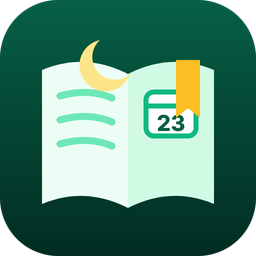

Layanan Agenda, Rapat, Adzan & Surat — sekretaris pribadi di atas layar Windows Anda.
Laras adalah aplikasi desktop Windows bergaya Dynamic Island. Ia tinggal di tepi atas layar dan mengingatkan Anda pada hal-hal penting tanpa mengganggu pekerjaan.
Jika Anda menghubungkan Google Calendar, Laras meminta izin berikut:
calendar.events) — hanya untuk membuat, memperbarui, dan menghapus acara rapat yang dibuat oleh Laras sendiri dari undangan yang terdeteksi. Laras tidak membaca, mengubah, atau menghapus acara lain di kalender Anda.calendar.calendarlist.readonly) — agar Anda bisa memilih kalender tujuan.email) — hanya untuk menampilkan akun mana yang terhubung.Semua komunikasi berlangsung langsung antara komputer Anda dan Google. Token akses disimpan terenkripsi (Windows DPAPI) di komputer Anda dan tidak pernah dikirim ke server pengembang. Laras tidak memiliki server sendiri. Detail lengkap ada di Kebijakan Privasi.
Pertanyaan atau masukan: mochamad.rochman@gmail.com